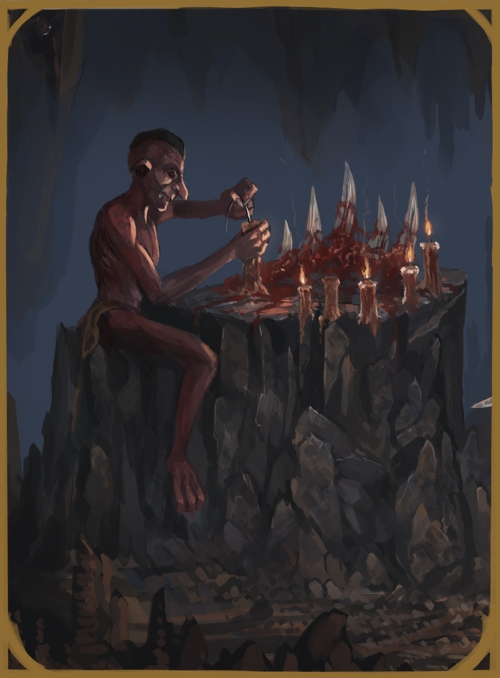

KOBOLD - DRIKID
SMALL HUMANOID
 These small pack hunting humanoids are commonly mistaken for evil fae-folk and have been the cause of many wrongful superstitions. Whether or not this is true, their tendencies of kidnapping their food as well as their fascination of treasures and an odd fixation on candles seems to match the tales told. While they somewhat resemble goblins and giblins in appearance, though with deep red skin, they are not of orcish heritage and are nearer akin to trolls.
KOBOLD CULTURE
Kobolds live in tribal patriarchal packs, with males being the diggers, workers, crafters and hunters, and females being cooks and mothers. The homes of kobolds are always in natural caves that have been expanded and dug out to fit the growth of the tribe. While kobolds live for short years comparative to humans, they also reproduce a bit faster. This often leads to kobold tribes taking over an area, usually nearing human settlements that they may plunder during the night or ambush solo travellers.
KOBOLD RELIGION
While kobolds are deeply superstitious, they are not religious per say. They bicker and argue amongst themselves as to who or what their god is, often it being a local creature of great power such as a drake or giant that they sacrifice to. Being diggers, Kobolds also sometimes take into consideration odd structures and geological foundations as great signs or gods in slumber. This varies per clan, and each tribe has its own great god or pantheon of gods.
KOBOLD DIMORPHISMS
The male and female of the kobold species are similar to humanity in their differences, although to a much lesser extent. Males are of stronger build by nature, while females are slightly weaker. Beyond this, they are very much alike in their mind and abilities.
KOBOLD STATISTICS
ADULT MALE AND FEMALE
GENERAL ATTRIBUTES
| AGE | HEIGHT | SIZE | SIGHT |
| 8-15 | ~3'01'' | Small - 0.5x0.5 | 5/10/8 |
MOVEMENT
| RUNNING | CLIMBING | SWIMMING | FLYING |
| 4 - Perfect | 2 - Good | 2 - Rough | - |
ABILITY SCORES
| STR | VIT | CON | AGI | DEX | INS | INT | WILL | WIS | CHA | BEA |
| 4 | 4 | 4 | 5 | 6 | 5 | 4 | 3 | 3 | 5 | 3 |
COMBAT ABILITY
| WOUNDS | INITIATIVE | ATTACK (MELEE) | ATTACK (RANGED) | MIGHT | |
| 4 | 9 | 5 | 5 | 4 | |
| DODGE | PARRY | DAMAGE | NAT. ARMOUR | PRESENCE (POWER) | PRESENCE (BEAUTY) |
| 5 | 2 | 1 | 1 | 3 | 3 |
NATURAL WEAPONS
| WEAPON | TYPE | MIGHT | DAMAGE | ADDITIONAL |
| Claws | Primary | +2 | +1 | - |
| Bite | Secondary | +0 | - | Agility based attacks only |